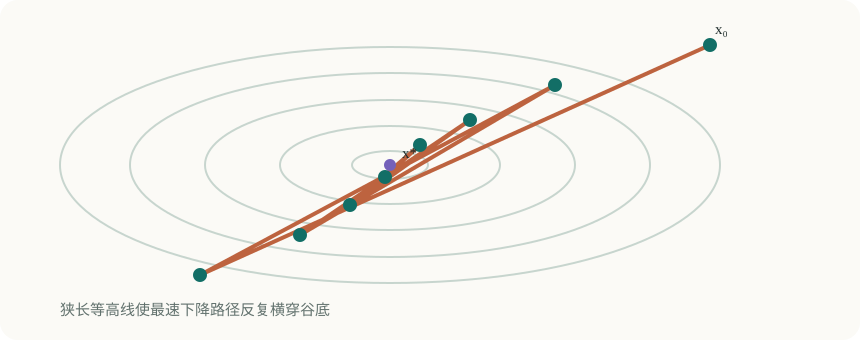

3.3.1 最速下降法：条件数如何拖慢收敛
最速下降每一步都沿负梯度走，看起来是最直接的方向；但在狭长椭圆等高线中，它会左右折返。精确线搜索也无法消除病态条件数带来的慢收敛。
从强凸二次函数开始
考虑 f(x)=½xᵀQx−bᵀx，其中 Q 对称正定。梯度为 g=Qx−b，唯一极小点 x* 满足 Qx*=b。误差 e=x−x*，于是 g=Qe。这个二次模型让最速下降法的每一步都可以精确计算，并能把收敛速度与 Q 的特征值联系起来。
Q 的特征值决定等高线椭圆的长短轴。若所有特征值相同，等高线是圆；若最大与最小特征值差距很大，等高线会变得狭长。
精确线搜索步长如何推导
最速下降方向 pk=−gk。沿该方向的一维函数为 f(xk−αgk)。对 α 求导并令其为零：
更新为 xk+1=xk−αkgk。这一步把当前方向上的一维二次函数精确最小化；但它只在当前直线上最优，不代表下一轮方向仍指向全局解。
条件数给出的最坏情况界
定义 Q-能量范数 ‖e‖Q²=eᵀQe。对这个二次目标，f(x)−f(x*)=½‖x−x*‖Q²。若 Q 的最小和最大特征值分别为 λmin、λmax，条件数 κ=λmax/λmin，精确线搜索的最速下降满足
κ=1 时收缩因子为 0，算法一步到达解；κ 越大，因子越接近 1，最坏情况下降越慢。这个界是对强凸二次目标和精确线搜索的理论上界，不是每一步实际收缩比例的精确预测。
为什么会出现锯齿路径

在狭长椭圆等高线中，负梯度往往被较大曲率方向主导。精确线搜索沿该方向走到当前直线的最低点，但下一轮梯度可能转向另一条轴，于是路径在椭圆谷底两侧来回折返。条件数越大，这种锯齿越明显。
这也解释了为什么更高阶方法会尝试利用曲率信息：它们不是只沿欧氏负梯度方向移动，而是对不同特征方向进行尺度校正。
交互：改变条件数
考虑 f(x,y)=½(x²+κy²)，从 (1,1) 出发，每轮沿负梯度做精确线搜索。改变 κ 与迭代次数，观察函数值下降和理论最坏情况收缩因子。
实时计算
Python：可复现的数值检查
代码只实现二维对角强凸二次目标上的最速下降与精确线搜索，用于核对理论收缩界；它不是一般非线性目标的线搜索程序。
"""Exact-line-search steepest descent on a 2-D SPD quadratic."""
def objective(x, kappa):
return 0.5 * (x[0] ** 2 + kappa * x[1] ** 2)
def steepest_descent(kappa: float, steps: int = 10):
if kappa < 1.0 or steps < 1:
raise ValueError("require kappa >= 1 and steps >= 1")
x = (1.0, 1.0)
history = [objective(x, kappa)]
for _ in range(steps):
g = (x[0], kappa * x[1])
numerator = g[0] ** 2 + g[1] ** 2
if numerator < 1e-28:
break
denominator = g[0] ** 2 + kappa * g[1] ** 2
alpha = numerator / denominator
x = (x[0] - alpha * g[0], x[1] - alpha * g[1])
history.append(objective(x, kappa))
return x, history
if __name__ == "__main__":
kappa = 25.0
x, history = steepest_descent(kappa, 10)
factor = ((kappa - 1.0) / (kappa + 1.0)) ** 2
ratios = [history[i + 1] / history[i] for i in range(len(history) - 1)]
print("x after iterations:", x)
print("objective:", history[-1])
print("worst-case factor:", factor)
print("largest observed ratio:", max(ratios))
assert all(r <= factor + 1e-12 for r in ratios)
assert history[-1] < history[0]思考：为什么 κ=1 时负梯度方向恰好指向解？如果把 Q 的特征值从 (1,25) 改成 (1,100)，理论收缩因子会如何变化？